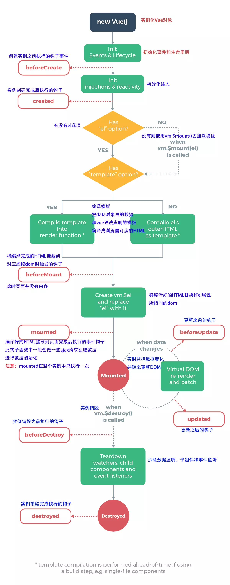
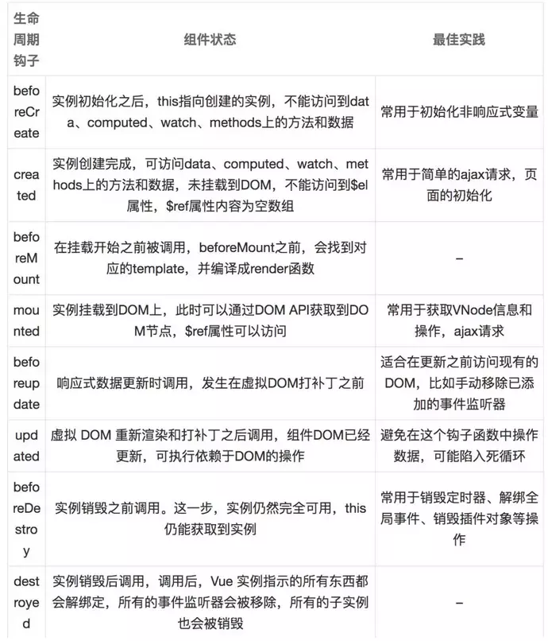

# vue 的生命周期


- beforeCreate: 在实例初始化之后，数据观测 data observer (props、data、computed) 和 event/watcher 事件配置之前被调用。
- created: 实例已经创建完成之后被调用。在这一步，实例已完成以下的配置：数据观测 (data observer)，属性和方法的运算， watch/event 事件回调。然而，挂载阶段还没开始，$el 属性目前不可见。
- beforeMount: 在挂载开始之前被调用：相关的 render 函数首次被调用。
- mounted:el 被新创建的 vm.$el 替换，并挂载到实例上去之后调用该钩子。
- beforeUpdate: 数据更新时调用，发生在虚拟 DOM 重新渲染和打补丁之前。 你可以在这个钩子中进一步地更改状态，这不会触发附加的重渲染过程。
- updated: 无论是组件本身的数据变更，还是从父组件接收到的 props 或者从 vuex 里面拿到的数据有变更，都会触发虚拟 DOM 重新渲染和打补丁，并在之后调用 updated。
- beforeDestroy: 实例销毁之前调用。在这一步，实例仍然完全可用。
- destroyed:Vue 实例销毁后调用。调用后，Vue 实例指示的所有东西都会解绑定，所有的事件监听器会被移除，所有的子实例也会被销毁。 该钩子在服务器端渲染期间不被调用。
# 注意
created 阶段的 ajax 请求与 mounted 请求的区别：前者页面视图未出现，如果请求信息过多，页面会长时间处于白屏状态。
# 单个组件的生命周期
- 初始化组件时，仅执行了
beforeCreate/Created/beforeMount/mounted四个钩子函数 - 当改变 data 中定义的变量（响应式变量）时，会执行
beforeUpdate/updated钩子函数 - 当切换组件（当前组件未缓存）时，会执行
beforeDestory/destroyed钩子函数 - 初始化和销毁时的生命钩子函数均只会执行一次，
beforeUpdate/updated可多次执行
# Vue.nextTick()
在下次 DOM 更新循环结束之后执行延迟回调。在修改数据之后立即使用这个方法，获取更新后的 DOM。
获取更新后的 DOM 言外之意就是什么操作需要用到了更新后的 DOM 而不能使用之前的 DOM 或者使用更新前的 DOM 会出问题，所以就衍生出了这个获取更新后的 DOM 的 Vue 方法。
Vue.nextTick () 回调函数中的执行的应该是会对 DOM 进行操作的 js 代码
# 什么时候需要用 Vue.nextTick ()?
- 你在 Vue 生命周期的 created () 钩子函数进行的 DOM 操作一定要放在 Vue.nextTick () 的回调函数中。原因是什么呢，原因是在 created () 钩子函数执行的时候 DOM 其实并未进行任何渲染，而此时进行 DOM 操作无异于徒劳，所以此处一定要将 DOM 操作的 js 代码放进 Vue.nextTick () 的回调函数中。与之对应的就是 mounted 钩子函数，因为该钩子函数执行时所有的 DOM 挂载和渲染都已完成，此时在该钩子函数中进行任何 DOM 操作都不会有问题 。
- 在数据变化后要执行的某个操作，当你设置 vm.someData = ‘new value’，DOM 并不会马上更新，而是在异步队列被清除，也就是下一个事件循环开始时执行更新时才会进行必要的 DOM 更新。如果此时你想要根据更新的 DOM 状态去做某些事情，就会出现问题。。为了在数据变化之后等待 Vue 完成更新 DOM ，可以在数据变化之后立即使用 Vue.nextTick (callback) 。这样回调函数在 DOM 更新完成后就会调用。
- mounted 不会承诺所有的子组件也都一起被挂载。如果你希望等到整个视图都渲染完毕，可以用 vm.$nextTick 替换掉 mounted.
1 | mounted: function () { |
原文地址